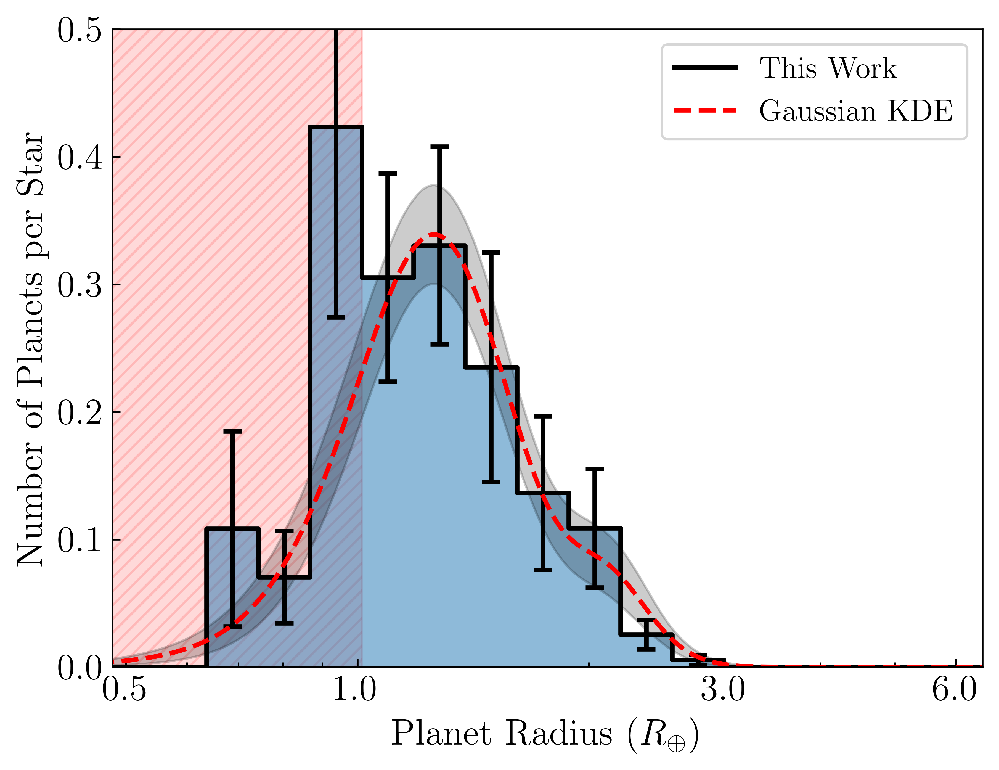
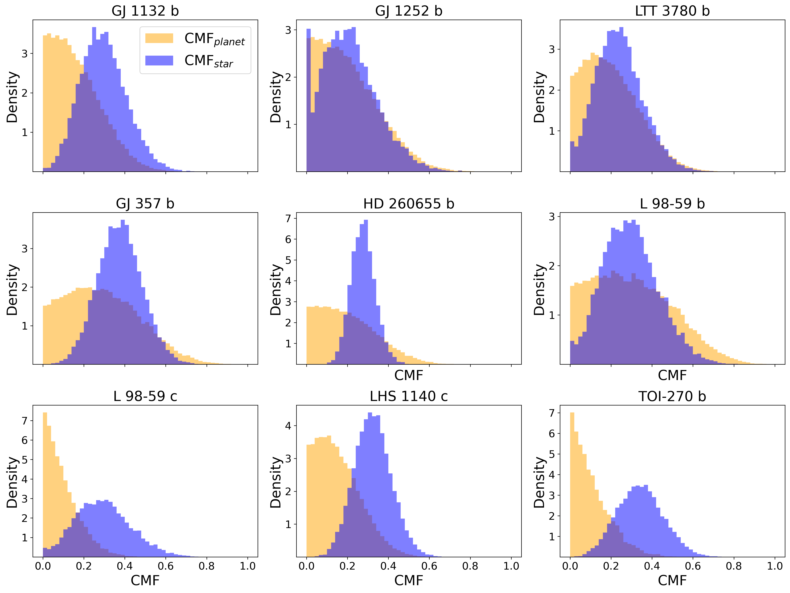
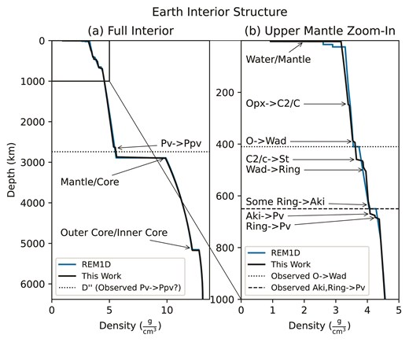
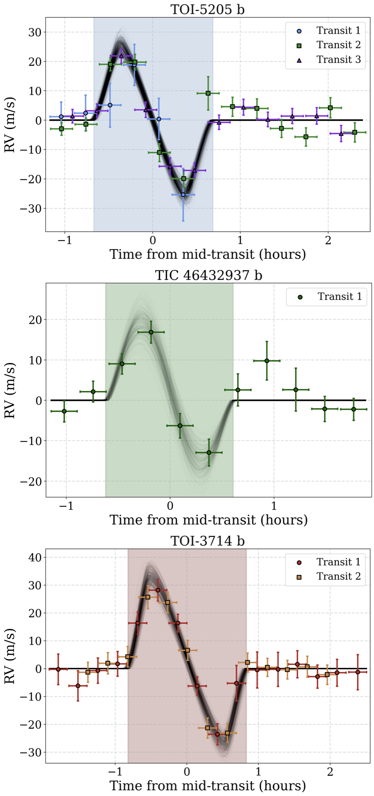
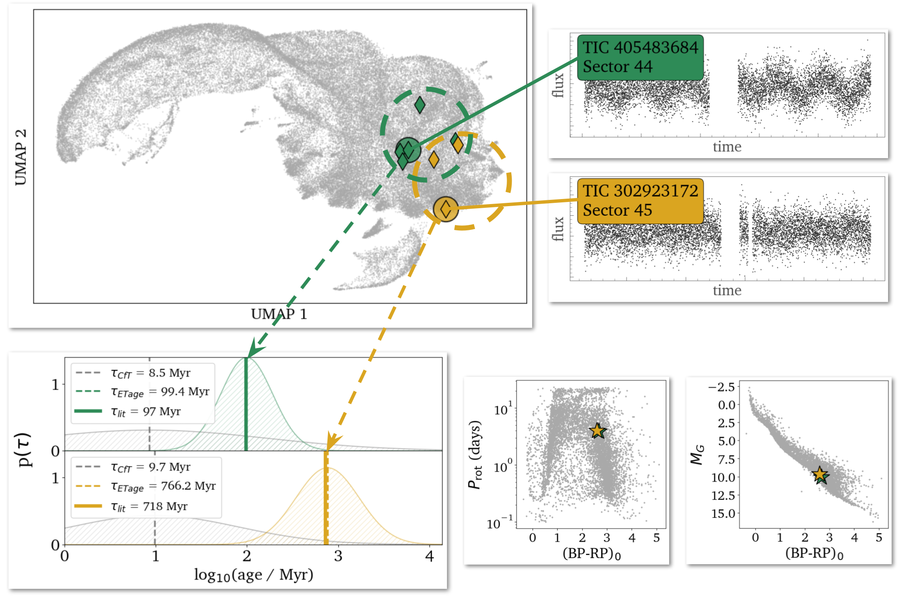
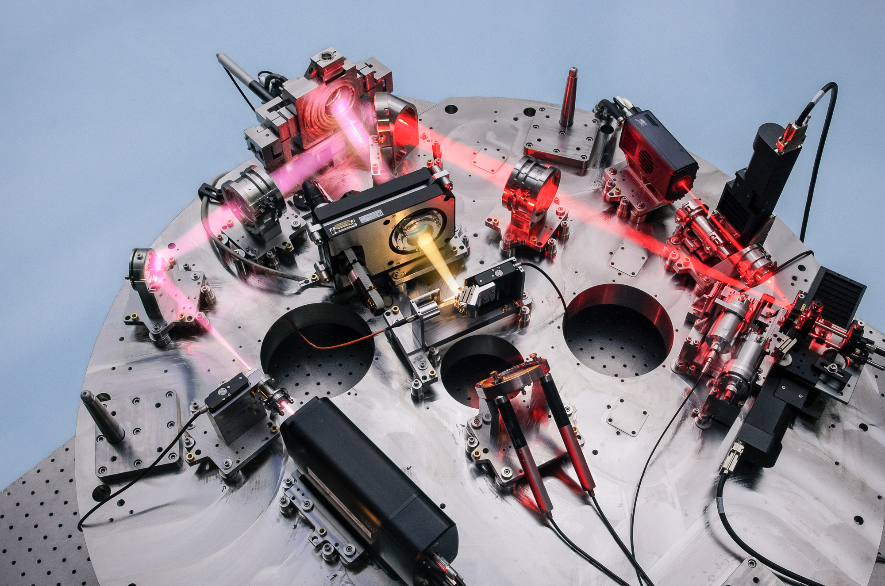

Click here for a full publication list on NASA ADS.

TESS Planet Occurrence Rates Reveal the Disappearance of the Radius Valley Around Mid-to-Late M Dwarfs
Gillis, E.D., Cloutier, R., & Pass, E. 2026, AJ, 171, 317
We present the deepest systematic search for planets around mid-to-late M dwarfs to date. We have surveyed 8134 mid-to-late M dwarfs observed by TESS with a custom built pipeline and recover 77 vetted transiting planet candidates. We characterize the sensitivity of our survey via injection-recovery and measure the occurrence rate of planets as a function of orbital period, instellation, and planet radius. We measure a cumulative occurrence rate of 1.10±0.16 planets per star with radii >1R⊕ orbiting within 30 days. This value is consistent with the cumulative occurrence rate around early M dwarfs, making M dwarfs collectively the most prolific hosts of small close-in planets. Unlike the bimodal Radius Valley exhibited by close-in planet population around FGK and early M dwarfs, we recover a unimodal planet radius distribution peaking at 1.25±0.05R⊕. We additionally find 0.954±0.147 super-Earths and 0.148±0.045 sub-Neptunes per star, with super-Earths outnumbering sub-Neptunes 5.5:1, firmly demonstrating that the Radius Valley disappears around the lowest mass stars. The dearth of sub-Neptunes around mid-to-late M dwarfs is consistent with predictions from water-rich pebble accretion models that predict a fading Radius Valley with decreasing stellar mass. Our results support the emerging idea that the sub-Neptune population around M dwarfs is composed of water-rich worlds. We find no hot Jupiters in our survey and set an upper limit of 0.012 hot Jupiters per mid-to-late M dwarf within 10 days.

Super-Earth masses and stellar abundances from NIRPS reveal tentative evidence for water-rich formation around M dwarfs
Weisserman, D., Gromek, N., Cloutier, R., et al. 2026, A&A, 709A, 165
Tracing the compositional link between terrestrial super-Earths and their host stars provides clues to their dominant formation pathway. By constraining the stellar abundances of refractory elements, we can predict the core mass fractions (CMFs) of their super-Earths. The level of agreement between this prediction and the planetary CMF derived from their masses and radii can reveal past formation processes, like mantle stripping and water-rich formation plus sequestration in the planet's core. Here, we present the first results from the Near Infrared Planet Searcher (NIRPS) GTO CMF subprogram: an intensive radial velocity campaign to refine masses and compute host stellar abundances of three hot super- Earths around M dwarfs (GJ 1132 b, GJ 1252 b, and LTT 3780 b), calculating masses of 1.69±0.15M⊕, 1.54±0.18M⊕, and 2.34±0.10M⊕ respectively. We measure the CMFs of these and six further hot super-Earths with precise masses already available in the literature to 10-15% precision. We compare these to CMF predictions made from measuring the Fe, Mg, and Si abundances of their host stars measured from the NIRPS spectra. We find that the CMFs of these planets are smaller than expected from their host stellar abundances, to a statistically significant degree. This discrepancy is suggestive of significant reservoirs of water, and while these planets are too hot to harbor surface water, they likely have interior water mass fractions of ∼1%.

A Validated Low-to-Intermediate Mass Planetary Interior Structure Model and New Mass-Radius Relations
Skinner, B.N., Pudritz, R.E., & Cloutier R. 2026, MNRAS, 550, 1076
The increasing precision of planetary mass and radius observations is bringing major questions about the structure and formation of planets--such as the nature of the radius valley and origin of super-Mercuries--within reach, demanding the development of interior structure models with more physics to more accurately determine planetary radii for a given composition. Here, we present a new model that includes state-of-the-art equations of state following the latest experimental and computational results, a physically-motivated mineralogy allowing multiple species to coexist within planetary layers, a non-adiabatic temperature profile, melting, and other features. This model replicates Earth's radius and moment of inertia coefficient to within 0.2%, Mars and the Moon's to within 0.5%, and Mercury, Venus, and Europa's to within 1% or 3σ. We use this model to calculate mass-radius relationships for H/He-enveloped, water-rich, Earth-like, and iron-rich bodies with masses between 0.01--100 M⊕. We calculate mass-radius tables and fit piece-wise power-laws to them for <8 M⊕ planets, finding that the exponent in M=bRa increases with mass and core mass fraction. We find radii generally smaller than in literature mass-radius relations at low instellations and larger at high instellations, with our improvement on the literature comparable to observational uncertainties. State-of-the-art interior structure models are thus required to interpret observational data. Our mass-radius curves comprising 32,975 model planets are publicly available.

New and Updated Rossiter-McLaughlin Measurements for Three Hot Jupiter-Hosting M Dwarfs
Weisserman, D., Cloutier, R., Rochon, A., et al. 2026, PASP submitted
Evidence suggests that Kozai-Lidov high-eccentricity migration (HEM) is the dominant migration channel for short-period Giant Exoplanets around M dwarf Stars (GEMS). However, it is unlikely that all short-period GEMS form via HEM, given that most systems lack known massive companions capable of driving HEM. Characterizing the stellar obliquities of GEMS via the Rossiter-McLaughlin (RM) effect can help shed light on the dynamical histories of GEMS. We present RM effect detections for the GEMS TOI-5205 b, TIC 46432937 b, and TOI-3714 b using the Gemini-North/MAROON-X spectrograph, bringing the total number of GEMS with RM detections to five. Our systems are well-aligned, with sky-projected obliquities of λ=0±6°, 3+4-3°, and 15+12-8°, respectively, and we measure a deprojected obliquity of ψ=24+7-8° for TOI-3714. We analyze archival radial velocities, astrometry, and speckle imaging data to search for additional companions around all five known GEMS with RM detections. We find tentative evidence for a new massive companion around one of these GEMS, TOI-5293 A, in Gaia DR2+DR3 data, though further follow-up is needed for confirmation. We rule out massive companions between ∼1−10 AU in the remaining systems, but cannot rule out all companions capable of driving HEM. Our findings present further evidence that short-period GEMS are preferentially aligned. While current results remain consistent with both primordial alignment and HEM plus tidal damping, we offer future directions for studies to further constrain the dominant migration channel for GEMS.

EncoTESS: Age-Sensitive Encodings from Raw TESS Light Curves
Van-Lane, P.R., Speagle, J.S., Cloutier, R., et al. 2026, AJ submitted
Main sequence stars of spectral types late F through M exhibit systematic variability in photometric light curves, particularly when they are young. Rotational modulation of starspots manifests as quasi-sinusoidal variability, which enables the measurement of rotation periods. Variability can also be stochastic, as in stellar flaring. However, since measurements of stochastic processes depend on the time of observation, they are typically noisier. Considering that different manifestations of variability have unique observational nuances, models that naturally unify these are incredibly useful for stellar characterization. Towards this goal, we have developed EncoTESS: a Time Series Foundation Model (TSFM) trained on a subset of TESS 2-min light curves. EncoTESS is specifically designed to handle the observational noise, heteroskedastic measurements, irregular sampling, and large data gaps common to TESS data. It is also ~1% of the size of a typical literature TSFM, so can be run easily on a modern laptop. EncoTESS encodes light curves into a fixed-size latent parameter space, which can be used to infer physical stellar properties and recovers light curve summary statistics well. EncoTESS outperforms rotation period and variability amplitude as age indicators for stars that have not converged onto the slow rotator sequence yet; broadly these include K and M stars less than ~100 Myr, and M stars less than ~1 Gyr. We focus on age inference as an application of EncoTESS in this work, but other downstream tasks such as stellar classification could also be explored. The architecture of EncoTESS enables its future extension to TESS light curves of all cadences, and additional surveys such as Kepler and the upcoming PLATO mission. The core EncoTESS framework and library of encodings produced for the stars used in this work are publicly available at this https URL.
Telscopes & Instruments
NIRPS

(Credit: N. Blind/Geneva Observatory/NIRPS/ESO Consortium)
SPIRou
SPectropolarimètre InfraROUge
(SPIRou) is a near-infrared spectropolarimeter located at the
Canada-France-Hawaii Telescope (CFHT) on Maunakea in Hawaii. SPIRou is optimized for high-precision
radial velocity measurements of M dwarfs and is commonly used to find/characterize exoplanets and study
stellar magnetic fields.
We also use SPIRou in our group to measure the detailed elemental abundances of M dwarfs to inform our
understanding of the interior compositions of the super-Earths and sub-Neptunes that orbit them.
(Credit: É Artigau)
TESS
NASA's
Transiting Exoplanet Survey Satellite (TESS) mission is a multi-year,
all-sky survey searching for the closest exoplanets to the solar system using the transit method.
TESS's regular public data releases are a fixture of much of the research being done in our group. I am also
a member of the TESS Follow-up Observing Program (TFOP), which conducts a variety of follow-up observations
to confirm TESS planet candidates, including the precise measurement of planet masses using the radial
velocity method.
(Credit: NASA/JPL-Caltech)
Ariel (planned 2031)
I am a member of
CAST, the Canadian Ariel Science Team, in support of the European Space Agency's
Ariel mission (Atmospheric
Remote-sensing Infrared Exoplanet Large-survey). Ariel will study the atmospheres of about a thousand
planets around other stars, including rocky planets and gas giants, to discover the chemical ingredients that
make up their atmospheres. The mission will also study planets' clouds and atmospheric dynamics by
monitoring variations over time.
(Credit: ESA/Ariel)
CASTOR (planned 2030s)
The
Cosmological Advanced Survey Telescope for Optical and uv Research
(CASTOR) is a proposed Canadian flagship mission with the Canadian Space Agency. CASTOR's unique
photometric and spectroscopic capabilities in the ultraviolet to the blue-optical will address a wide
range of topics from the solar system to cosmology.
I am a CASTOR science team member focusing on the Stellar Astrophysics and Exoplanets working groups.
(Credit: NRC/CASTOR)